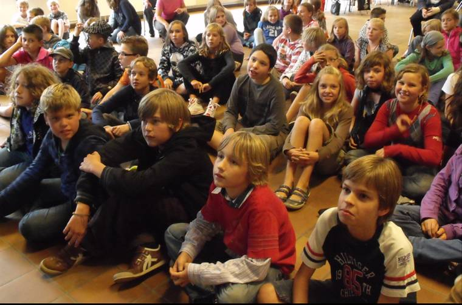

VOCA'S
Bijbelse voca's
Voca-re
Drie sacramenten
|
.: VOCA-RE :.
Het woord “voca” verwijst naar het Latijnse werkwoord ‘vocare’; dat betekent ‘roepen’. In de voorbereiding op het vormsel zullen we leren aanvoelen dat het God is die mensen roept om aan zijn droom mee te werken.
Ieder mens is vrij om Gods roep te beantwoorden, maar we stellen vast dat wanneer een mens zich zo geroepen weet door God, heel vaak een antwoord volgt.
In cybertermen wordt een “antwoord” aangeduid met de letters “RE” (verwijzend naar respondere, het Latijnse woord voor antwoorden).
Vandaar het koppelteken tussen VOCA en RE. |
In de vormselvoorbereiding maken we kennis met verschillende vormen van antwoord geven, zodat elke vormeling voor zichzelf kan leren uitmaken hoe hij het christen-zijn zal beleven na het vormsel.
We koppelen dit aan het thema van de schattenjacht. Elk mens zoekt in zijn leven naar het geluk. Niet een tijdelijk of oppervlakkig kick-gevoel, wel een blijvende diepe tevredenheid.
Als christen geloven wij dat we dit bij God kunnen vinden. En dit is van onschatbare waarde !
Start en inschrjvingsontbijt: Op zoek naar de schat
Door te bidden komen we op het spoor van de geluksschat bij God.
|
 |
Samen vinden we de schat
Geloven doe je niet alleen. Je houdt dat niet vol als je enkel op je eentje met God praat (hoewel dat soms ook eens nodig is).
In deze namiddagbijeenkomst maken we kennis met onze parochie en plaatselijke gemeenschap. We zien hoe véle mensen dit geloof delen. Wij mogen daar deel van uitmaken.
Jesus, it’s a way of life
God ‘roept’ mensen om te werken aan zijn droom. Dit is het centrale thema van onze vormselvoorbereiding. Ook wij zijn door God geroepen.
Maar hoe doe je dat, werken aan Zijn droom?
In deze voca maken we kennis met mensen die God tonen door goed te doen voor anderen.
We be-leven hoe Gods droom er een beetje kan uitzien en hoe Jezus daarvoor het voorbeeld gaf.
Je krijgt daarvoor de keuze uit verschillende engagementen die je eens kan meemaken. Klik hier voor een volledig overzicht van de keuzelijst. |

|
|